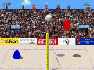
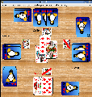
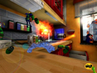
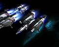
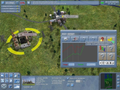
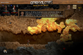
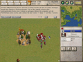
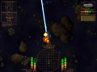

Open-Source-Spiele
Archivierte Anleitung
Dieser Artikel wurde archiviert, da er - oder Teile daraus - nur noch unter einer älteren Ubuntu-Version nutzbar ist. Diese Anleitung wird vom Wiki-Team weder auf Richtigkeit überprüft noch anderweitig gepflegt. Zusätzlich wurde der Artikel für weitere Änderungen gesperrt.
Zum Verständnis dieses Artikels sind folgende Seiten hilfreich:
Archive entpacken und Programmen Ausführungsrechte verleihen
Hinweis!
Fremdpakete können das System gefährden.
Alle hier vorgestellten Spiele sind quelloffene Spiele, die sich (noch) nicht den Ubuntu-Quellen befinden und über andere Wege installiert werden müssen. Welche Möglichkeiten der Installation zur Verfügung stehen, ist der jeweiligen Spielbeschreibung zu entnehmen. Spiele, die in den Ubuntu-Paketquellen enthalten sind, sind im Bereich Ubuntu-Spiele zu finden.
Bei einigen Spielen werden zusätzlich benötigte Pakete automatisch mitinstalliert. Es kann durchaus vorkommen, dass solche Pakete in den Ubuntu-Quellen nicht verfügbar sind und auf anderem Weg installiert werden müssen!
Die Spiele sind übersichtlich nach Gattungen sortiert und Bildschirmfotos geben einen ersten Vorgeschmack auf das jeweilige Spiel.
Viel Spaß beim Stöbern... 
Arcade¶
Der Begriff Arcade umfasst die Spiele, welche in Automaten gespielt werden. Meist handelt es sich hier um Spiele, die eine schnelle Reaktion erfordern, eine actionreiche Handlung aufweisen und oftmals einen Mehrspielermodus integriert haben. Das Spielprinzip ist meist relativ einfach gehalten, was aber dem Spielspaß nicht schadet. Ältester bekannter Vertreter ist das Atarispiel Pong.
M.A.R.S.¶
M.A.R.S.  ist ein Open-Source Arcade-Spiel im Stile von Asteroids, jedoch hat man in diesem Shooter nicht Asteroiden sondern andere Raumschiffe als Gegner, die man abschießen muss. Zusätzlich muss man die Planeten in der Umgebung und deren Gravitation im Auge behalten.
ist ein Open-Source Arcade-Spiel im Stile von Asteroids, jedoch hat man in diesem Shooter nicht Asteroiden sondern andere Raumschiffe als Gegner, die man abschießen muss. Zusätzlich muss man die Planeten in der Umgebung und deren Gravitation im Auge behalten.
Weitere Informationen bietet der Artikel zu Spiele/M.A.R.S..
Brettspiele¶
Schach¶
Dem großen Themenbereich Schachsoftware widmet sich eine eigene Übersicht, in der nicht nur einfache Schachprogramme, sondern auch Schachengines und -datenbanken aufgeführt sind.
Geschicklichkeit¶
Blobby Volley 2¶
 Blobby Volley 2 ist die Neuauflage des beliebten Volleyballspiels Blobby Volley. Es ermöglicht kurzweilige Spielchen gegen Bots (Computergegner) verschiedener Schwierigkeitsstufen, Spiele gegen menschliche Mitspieler am selben Rechner und Netzwerkspiele. Blobby Volley 2 steht in einer Alphaversion für Linux (Debian-Pakete [1]), MacOSX und Windows zu Verfügung.
Weitere Informationen bietet der Artikel zu Blobby Volley 2.
Kartenspiele¶
FreeDoko¶
 FreeDoko  ist ein freies Doppelkopfspiel für Linux (Debian-Paket [1]) und Windows. Es unterstützt alle gängigen Spielregeln, egal ob "mit Neuner" oder "ohne", und bringt Computergegner für jede Spielstärke mit. Der Mehrspielermodus ist in der jetzigen Version 0.7.4 nur eingeschränkt möglich und für Testzwecke gedacht. Eine vollständige Implementierung ist für Version 0.8 vorgesehen. Bis dahin kann man sich jedoch die Zeit problemlos mit den Computergegnern herumschlagen.
ist ein freies Doppelkopfspiel für Linux (Debian-Paket [1]) und Windows. Es unterstützt alle gängigen Spielregeln, egal ob "mit Neuner" oder "ohne", und bringt Computergegner für jede Spielstärke mit. Der Mehrspielermodus ist in der jetzigen Version 0.7.4 nur eingeschränkt möglich und für Testzwecke gedacht. Eine vollständige Implementierung ist für Version 0.8 vorgesehen. Bis dahin kann man sich jedoch die Zeit problemlos mit den Computergegnern herumschlagen.
Weitere Informationen bietet der Artikel zu Spiele/FreeDoko.
Rollenspiele¶
Vulture's Eye und Vulture's Claw¶
Vulture's Eye ist eine Weiterentwicklung von Falcon's Eye (siehe auch Spiele/Ubuntu-Spiele/Rollenspiele), einem grafischen Client zum Spielen von Nethack. Vulture's Claw ist ein grafischer Client zum Spielen von Slash'Em, welches wiederum eine Weiterentwicklung von Nethack ist. Nethack stellt sozusagen den Urahn aller Dungeon-Crawler-Spiele wie etwa Diablo dar: Man erforscht immer tiefere Dungeons, besiegt (oder flüchtet vor) Monstern und sammelt Schätze.
Es gibt für beide Vultures derzeit (9.04 Jaunty) leider noch keine fertigen DEB-Pakete. Der Wiki-Artikel bietet eine Anleitung zum installieren: Vulture.
Shooter¶
World of Padman¶
 World of Padman ist ein Shooter, der ähnlich wie Warsow auf einen bunten Comic-Stil setzt. Ursprünglich handelte es sich um einen reinen Quake 3 Mod. Nachdem die Quake 3 Engine jedoch unter die GPL gestellt wurde, wurde ein eigenständiges Spiel aus dem Mod gemacht.
Einen Loki Installer kann man hier herunterladen.
Simulationen¶
Freespace 2¶
 Freespace 2 ist eine etwas ältere Raumkampfsimulation, die aber dank einer großen Community weiterlebt. Das Spiel ist seit April 2002 als Open Source verfügbar und wurde durch die Community vor allem in Sachen Grafik stark verbessert. Hieraus entstand das "Freespace 2 Open Source Code Project", das Freespace 2 erweitert und für Linux oder Mac OS portiert.
Weitere Informationen bietet der Artikel zu Freespace 2.
Energie Tycoon¶
 Bei Energie Tycoon handelt es sich um eine Wirtschaftsimulation bei der das Ziel ist, ein Energieimperium aufzubauen. Weitere Informationen findet man im Artikel Energie Tycoon.
Strategie¶
FreeOrion¶
FreeOrion ist ein in Entwicklung befindliches rundenbasiertes Weltraum- und 4X-Strategiespiel. Spielprinzip und Name sind inspiriert von der Master of Orion-Reihe: FreeOrion
OpenClonk¶
 OpenClonk vereint verschiedene Spielgenre miteinander. Neben den Einflüssen von Geschicklichkeitsspielen kommen zusätzlich Aufbaustrategie-, Taktik- und Jump'n'Run-Elemente zum Einsatz, die den Spieler vor eine umfassende Herausforderung stellen. Ziel des Spiels ist es mit den kleinen menschenähnlichen Wesen - den Clonks - verschiedene Missionen zu erfüllen. Weitere Informationen: OpenClonk
Seven Kingdoms¶
 Mit dem Ziel andere Königreiche zu besiegen, baut man seine Macht und seinen Einflussbereich immer weiter aus, rekrutiert Dorfbewohner und sammelt Ressourcen, um eine schlagkräftige Streitmacht auf die Beine zu stellen. Der Echtzeitstrategieklassiker von 1997 wurde als Open-Source veröffentlicht und wird von der Community weiterentwickelt. Ausführliche Informationen findet man im Artikel Seven Kingdoms.
StarTrade¶
 StarTrade ist eine Weltraum-Wirtschaftssimulation mit Suchtfaktor.
Eine Weltraumsimulation wie Wing Commander: Privateer oder X - Beyond the Frontier, nur eben in der 2D-Draufsicht. Entweder handelt man, oder man wird Pirat. Wer weder Handeln noch Händler ausrauben will, schließt sich der Allianz an, bei der man die Aufgabe hat, Piraten zu jagen und pro Abschuss ein "Kopfgeld" bekommt.
Sie starten mit einem kleinen Allzweck-Raumschiff und neutraler Position in der Galaxis. Verbessern Sie ihr Raumschiff, beherrschen Sie die Galaxis!
U-Boot-Simulatoren¶
Danger from the Deep¶
Danger from the Deep (Die Gefahr aus der Tiefe) ist eine U-Boot Simulation, die im Zweiten Weltkrieg spielt. Die Simulation wird zur Zeit für Linux (Debian-Pakete [B]) und Windows entwickelt und befindet sich noch in der Alpha-Phase, aber ist schon gut und in deutscher Sprache spielbar. Das Spiel selbst ist frei, aber die Audio-, Video- und Multimediadateien sowie die 2D/3D-Bebilderung stehen unter der CC At-Nc-Nd 2.0/2.5 Lizenz.
Weitere Informationen bietet der Artikel zu Danger from the Deep.
- Erstellt mit Inyoka
-
 2004 – 2017 ubuntuusers.de • Einige Rechte vorbehalten
2004 – 2017 ubuntuusers.de • Einige Rechte vorbehalten
Lizenz • Kontakt • Datenschutz • Impressum • Serverstatus -
Serverhousing gespendet von